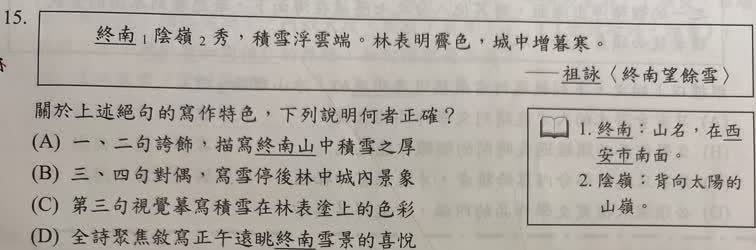

分享原卷｜第15題
完整原題
作答所需文章／材料
終南¹陰嶺²秀，積雪浮雲端。 林表明霽色，城中增暮寒。 ——祖詠〈終南望餘雪〉 【原卷注釋】 1. 終南：山名，在西安市南面。 2. 陰嶺：背向太陽的山嶺。先想一想，再查看答案、解說與原圖
逐項解析
| 選項與原句 | 判讀 | 句意與判斷理由 |
|---|---|---|
| (A) 一、二句誇飾，描寫終南山中積雪之厚 | 不選 | 一、二句並非只誇張積雪厚度，還有山勢、秀麗與雲端意象。 |
| (B) 三、四句對偶，寫雪停後林中城內景象 | 應選 | 林表對城中、明對增、霽色對暮寒，構成對偶。 |
| (C) 第三句視覺寫積雪在林表塗上的色彩 | 不選 | 霽色是雪後放晴的光景，不是雪塗在樹梢的顏色。 |
| (D) 全詩聚焦寫正午遠眺終南雪景的喜悅 | 不選 | 暮寒明指傍晚，不是正午。 |
詳細說明與解題步驟
【逐句白話】
終南陰嶺秀：終南山背陽的山嶺顯得秀麗。陰嶺是山的北側。
積雪浮雲端：高處的積雪遠看像浮在雲端，寫出山勢高聳、雪景清遠，不只是誇張雪有多厚。
林表明霽色：雨雪停止、天色放晴，林梢顯出明亮的晴後光景。林表是樹林末梢，霽讀ㄐㄧˋ；色指天色、景象，不是把某種顏料塗在樹梢。
城中增暮寒：到了傍晚，城裡的寒意更深。暮是傍晚，因此不是正午。
【三、四句如何對偶】
林表／城中都是表示場所的名詞組；明／增前後相對；霽色／暮寒都是名詞。前句寫看見的晴後林梢，後句轉到城內傍晚的寒意，結構相對，所以B正確。
【排除其餘選項】
A只把一、二句說成誇飾積雪厚度，忽略陰嶺的秀麗和雲端的高度。C把霽色讀成雪塗在林表上的顏色，沒有掌握放晴的光景。D的正午與末句暮寒矛盾。
【原AI解說訂正】
全詩四句、每句五字，是五言絕句，原題也明寫絕句；不是五言律詩。「初升的夕陽」也自相矛盾，應理解為雪後晴光與傍晚寒意的對照，不自行加上詩中沒有的日出時段。一、二句不須因AI說法硬套必須工整對仗的規則。
【核對依據】
教育部字典林表：https://dict.revised.moe.edu.tw/dictView.jsp?ID=64490&la=0&powerMode=0 。學校唐詩教材將本詩列於五言絕句：https://www.stp.kh.edu.tw/upload/244/104_64229/1%E4%B8%8A%E5%94%90%E8%A9%A9%E9%97%96%E9%97%9C.pdf 。
核對註記：已依原卷或完整文字核對並獨立解題；對應教材課次未確認，歸綜合。
原圖（僅本題）
